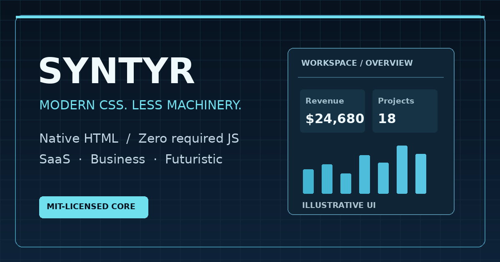

Cacheable CSS
Core and recipes are separate, with regular stylesheets and no duplicate preload.
NATIVE HTML / OPTIMIZED DELIVERY
An example of sensible initial resource priorities: early CSS, one important image and deferred offscreen media. No JavaScript required.

01 / BASELINE
Core and recipes are separate, with regular stylesheets and no duplicate preload.
Image dimensions reserve space and reduce avoidable layout shift.
The likely hero image is eager; later imagery uses the browser's native lazy loading.
02 / FURTHER DOWN THE PAGE
The illustrative operations preview is not required for the first viewport. Lazy loading is appropriate here, rather than on the hero.